Statistical plot of features
Usage
FeatureStatPlot(
srt,
stat.by,
group.by = NULL,
split.by = NULL,
bg.by = NULL,
fill.by = c("group", "feature", "expression"),
cells = NULL,
slot = c("data", "counts"),
assay = NULL,
keep_empty = FALSE,
individual = FALSE,
plot_type = c("violin", "box", "bar", "dot", "col"),
palette = "Paired",
palcolor = NULL,
alpha = 1,
bg_palette = "Paired",
bg_palcolor = NULL,
bg_apha = 0.2,
add_box = FALSE,
box_color = "black",
box_width = 0.1,
box_ptsize = 2,
add_point = FALSE,
pt.color = "grey30",
pt.size = NULL,
pt.alpha = 1,
jitter.width = 0.5,
add_trend = FALSE,
trend_color = "black",
trend_linewidth = 1,
trend_ptsize = 2,
add_stat = c("none", "mean", "median"),
stat_color = "black",
stat_size = 1,
cells.highlight = NULL,
cols.highlight = "red",
sizes.highlight = 1,
alpha.highlight = 1,
calculate_coexp = FALSE,
same.y.lims = FALSE,
y.min = NULL,
y.max = NULL,
y.trans = "identity",
y.nbreaks = 5,
sort = FALSE,
stack = FALSE,
flip = FALSE,
comparisons = NULL,
ref_group = NULL,
pairwise_method = "wilcox.test",
sig_label = c("p.signif", "p.format"),
multiplegroup_comparisons = FALSE,
multiple_method = "kruskal.test",
aspect.ratio = NULL,
title = NULL,
subtitle = NULL,
xlab = NULL,
ylab = "Expression level",
legend.position = "right",
legend.direction = "vertical",
theme_use = "theme_scp",
theme_args = list(),
combine = TRUE,
nrow = NULL,
ncol = NULL,
byrow = TRUE,
force = FALSE,
seed = 11
)Examples
library(dplyr)
data("pancreas_sub")
FeatureStatPlot(pancreas_sub, stat.by = c("G2M_score", "Fev"), group.by = "SubCellType")
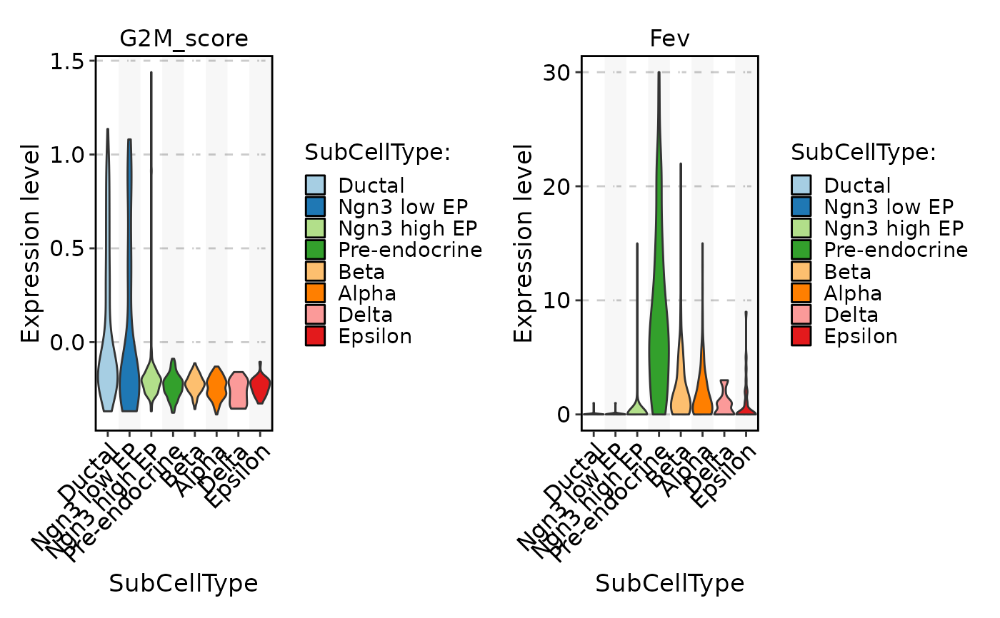
FeatureStatPlot(pancreas_sub, stat.by = c("G2M_score", "Fev"), group.by = "SubCellType") %>% panel_fix(height = 1, width = 2)
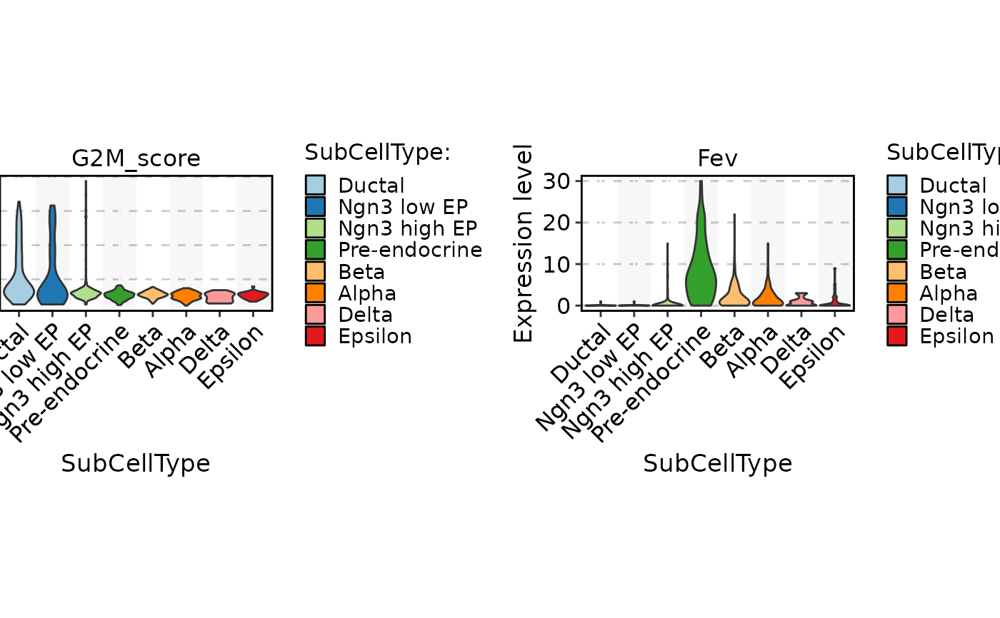
FeatureStatPlot(pancreas_sub, stat.by = c("G2M_score", "Fev"), group.by = "SubCellType", plot_type = "box")
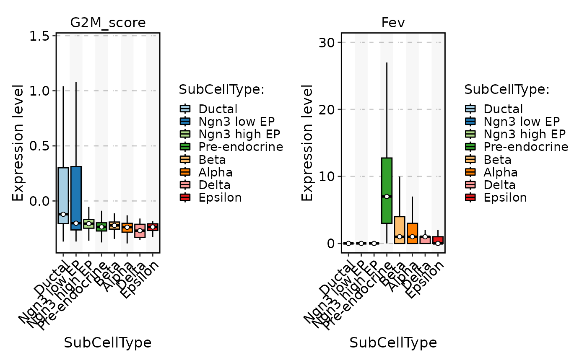
FeatureStatPlot(pancreas_sub, stat.by = c("G2M_score", "Fev"), group.by = "SubCellType", plot_type = "bar")
#> Warning: Computation failed in `stat_summary()`
#> Caused by error in `fun.data()`:
#> ! The package "Hmisc" is required.
#> Warning: Computation failed in `stat_summary()`
#> Caused by error in `fun.data()`:
#> ! The package "Hmisc" is required.
#> Warning: Computation failed in `stat_summary()`
#> Caused by error in `fun.data()`:
#> ! The package "Hmisc" is required.
#> Warning: Computation failed in `stat_summary()`
#> Caused by error in `fun.data()`:
#> ! The package "Hmisc" is required.
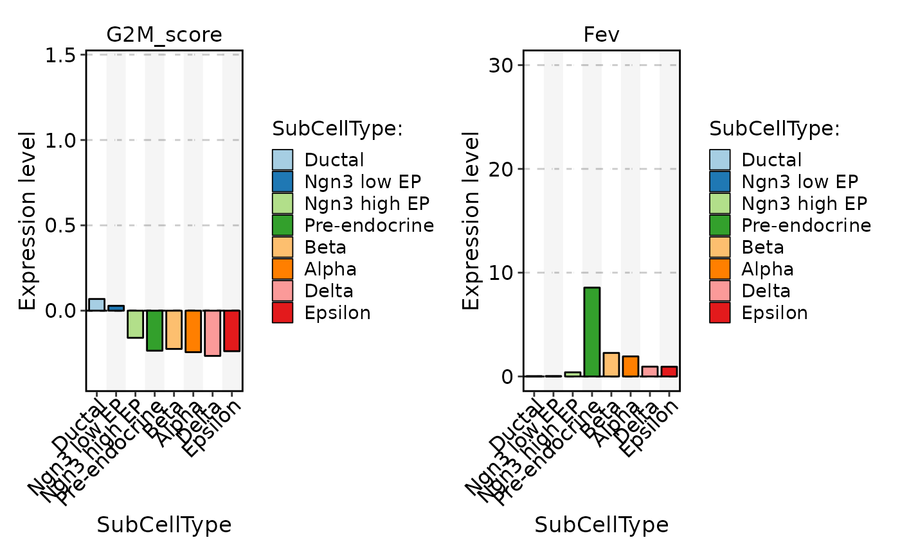
FeatureStatPlot(pancreas_sub, stat.by = c("G2M_score", "Fev"), group.by = "SubCellType", plot_type = "dot")
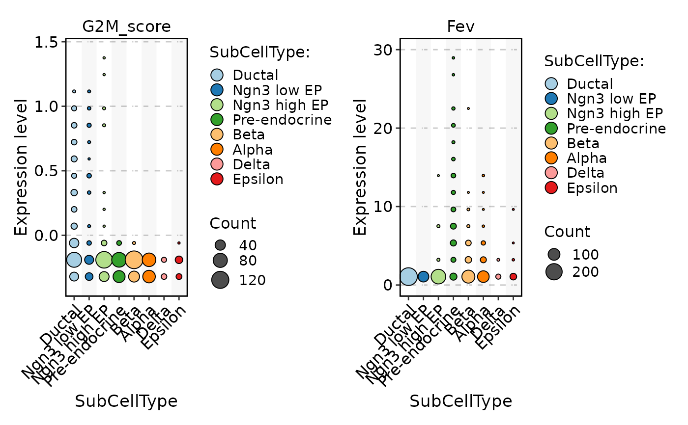
FeatureStatPlot(pancreas_sub, stat.by = c("G2M_score", "Fev"), group.by = "SubCellType", plot_type = "col")
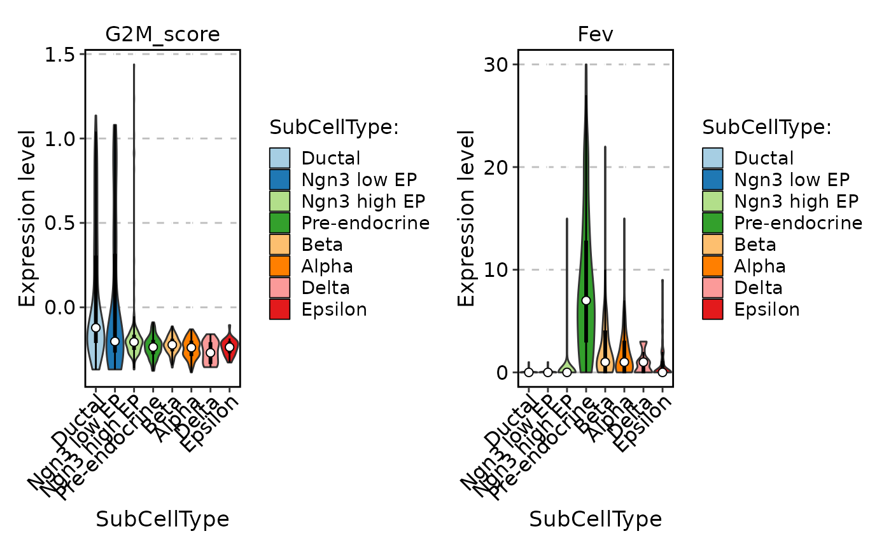
FeatureStatPlot(pancreas_sub, stat.by = c("G2M_score", "Fev"), group.by = "SubCellType", add_box = TRUE)
FeatureStatPlot(pancreas_sub, stat.by = c("G2M_score", "Fev"), group.by = "SubCellType", add_point = TRUE)
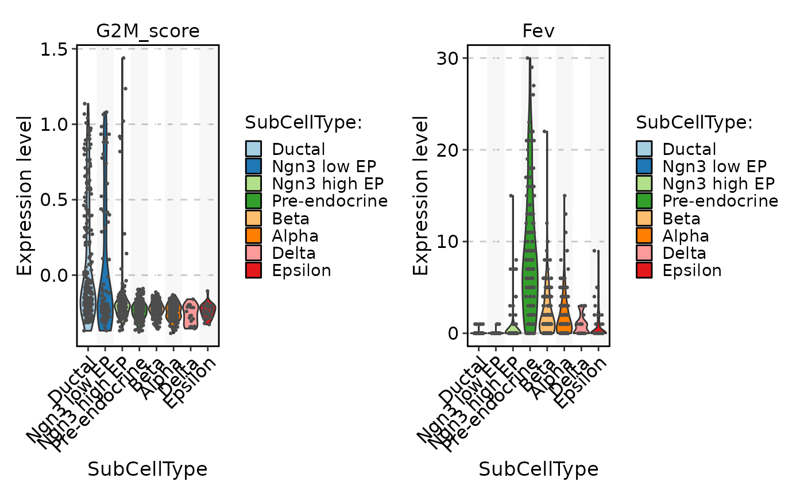
FeatureStatPlot(pancreas_sub, stat.by = c("G2M_score", "Fev"), group.by = "SubCellType", add_trend = TRUE)
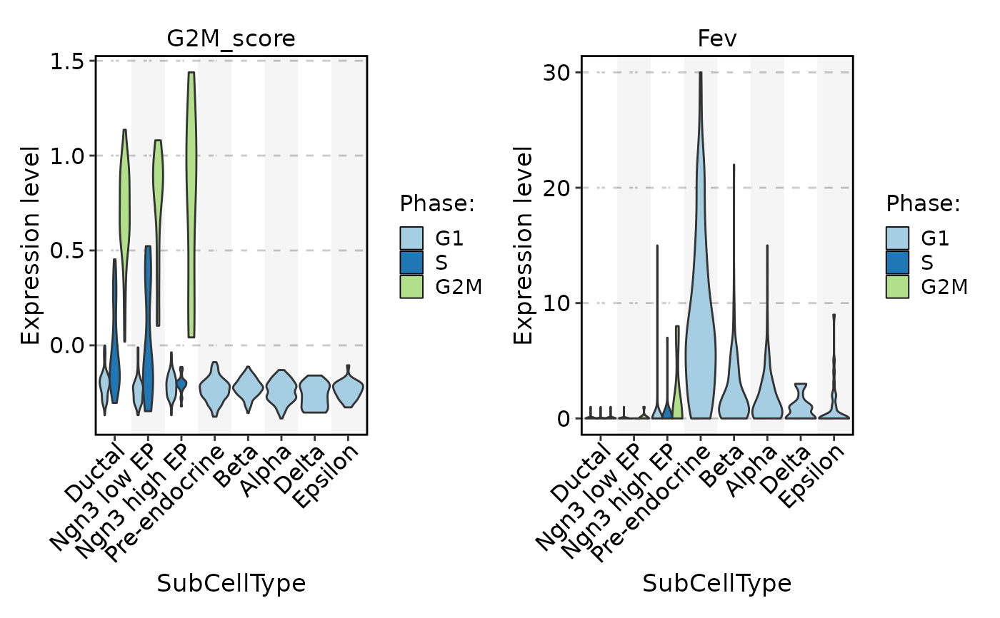
FeatureStatPlot(pancreas_sub, stat.by = c("G2M_score", "Fev"), group.by = "SubCellType", split.by = "Phase")
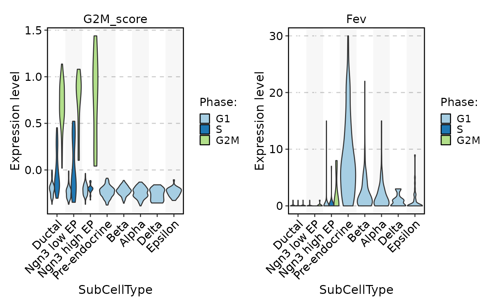
FeatureStatPlot(pancreas_sub, stat.by = c("G2M_score", "Fev"), group.by = "SubCellType", split.by = "Phase", add_box = TRUE, add_trend = TRUE)
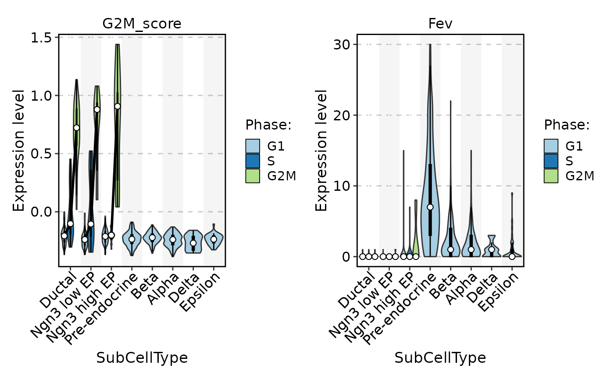
FeatureStatPlot(pancreas_sub, stat.by = c("G2M_score", "Fev"), group.by = "SubCellType", split.by = "Phase", comparisons = TRUE)
#> Install package: "ggpubr" ...
#> 'getOption("repos")' replaces Bioconductor standard repositories, see 'help("repositories", package = "BiocManager")'
#> for details.
#> Replacement repositories:
#> CRAN: https://cloud.r-project.org
#> Bioconductor version 3.17 (BiocManager 1.30.22), R 4.3.1 (2023-06-16)
#> Installing package(s) 'ggpubr'
#> also installing the dependencies ‘corrplot’, ‘ggsci’, ‘polynom’, ‘rstatix’
#> Warning: Detected more than 2 groups. Use multiple_method for comparison
#> Warning: Detected more than 2 groups. Use multiple_method for comparison
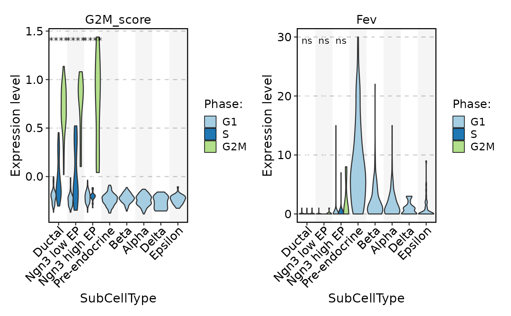
FeatureStatPlot(pancreas_sub, stat.by = c("Rbp4", "Pyy"), group.by = "SubCellType", fill.by = "expression", palette = "Blues", same.y.lims = TRUE)
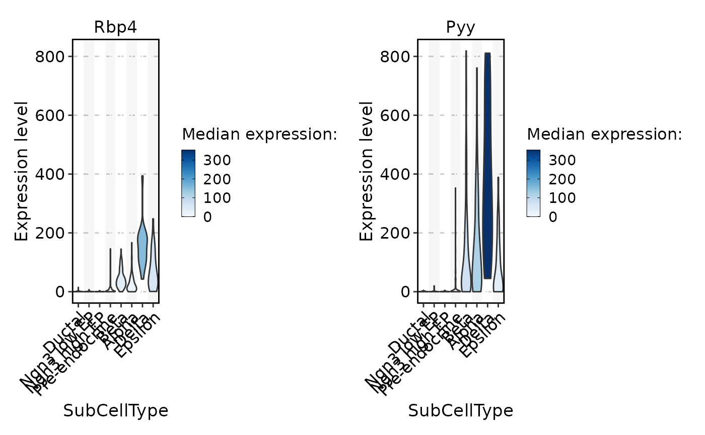
FeatureStatPlot(pancreas_sub, stat.by = c("Rbp4", "Pyy"), group.by = "SubCellType", multiplegroup_comparisons = TRUE)
FeatureStatPlot(pancreas_sub, stat.by = c("Rbp4", "Pyy"), group.by = "SubCellType", comparisons = list(c("Alpha", "Beta"), c("Alpha", "Delta")))
 FeatureStatPlot(pancreas_sub, stat.by = c("Rbp4", "Pyy"), group.by = "SubCellType", comparisons = list(c("Alpha", "Beta"), c("Alpha", "Delta")), sig_label = "p.format")
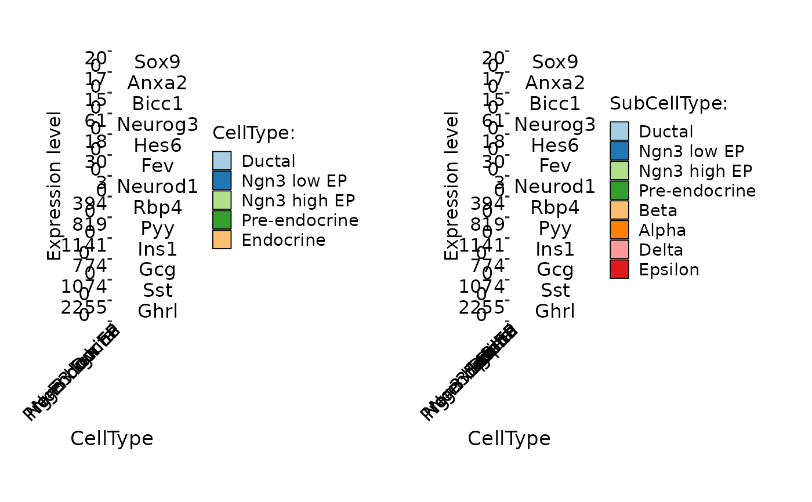
FeatureStatPlot(pancreas_sub, stat.by = c("Rbp4", "Pyy"), group.by = "SubCellType", bg.by = "CellType", add_box = TRUE, stack = TRUE)
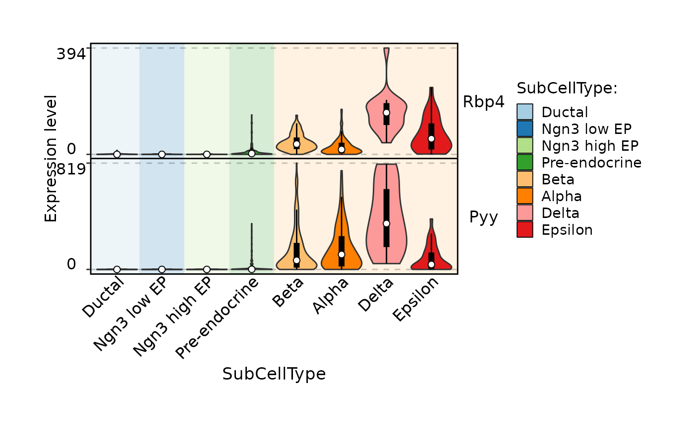
FeatureStatPlot(pancreas_sub,
stat.by = c(
"Sox9", "Anxa2", "Bicc1", # Ductal
"Neurog3", "Hes6", # EPs
"Fev", "Neurod1", # Pre-endocrine
"Rbp4", "Pyy", # Endocrine
"Ins1", "Gcg", "Sst", "Ghrl" # Beta, Alpha, Delta, Epsilon
),
legend.position = "top", legend.direction = "horizontal",
group.by = "SubCellType", bg.by = "CellType", stack = TRUE
)
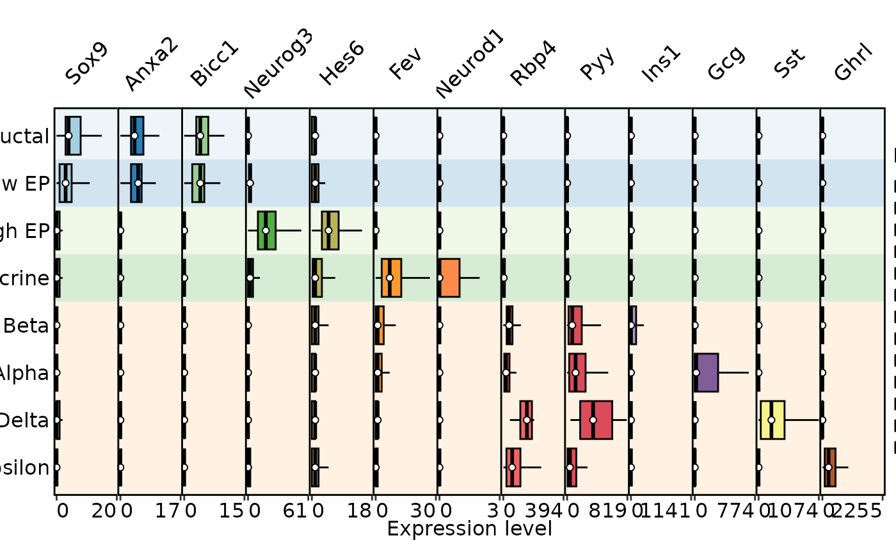
FeatureStatPlot(pancreas_sub,
stat.by = c(
"Sox9", "Anxa2", "Bicc1", # Ductal
"Neurog3", "Hes6", # EPs
"Fev", "Neurod1", # Pre-endocrine
"Rbp4", "Pyy", # Endocrine
"Ins1", "Gcg", "Sst", "Ghrl" # Beta, Alpha, Delta, Epsilon
),
fill.by = "feature", plot_type = "box",
group.by = "SubCellType", bg.by = "CellType", stack = TRUE, flip = TRUE
) %>% panel_fix_single(width = 8, height = 5) # Because the plot is made by combining, we want to adjust the overall height and width
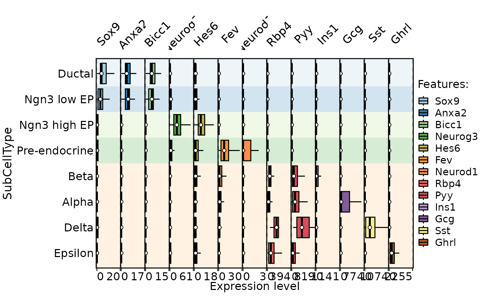
FeatureStatPlot(pancreas_sub, stat.by = c("Rbp4", "Pyy"), group.by = "SubCellType", comparisons = list(c("Alpha", "Beta"), c("Alpha", "Delta")), sig_label = "p.format")
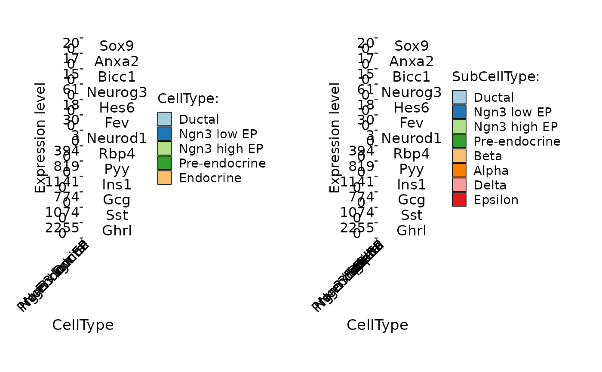
FeatureStatPlot(pancreas_sub, stat.by = c("Rbp4", "Pyy"), group.by = "SubCellType", bg.by = "CellType", add_box = TRUE, stack = TRUE)
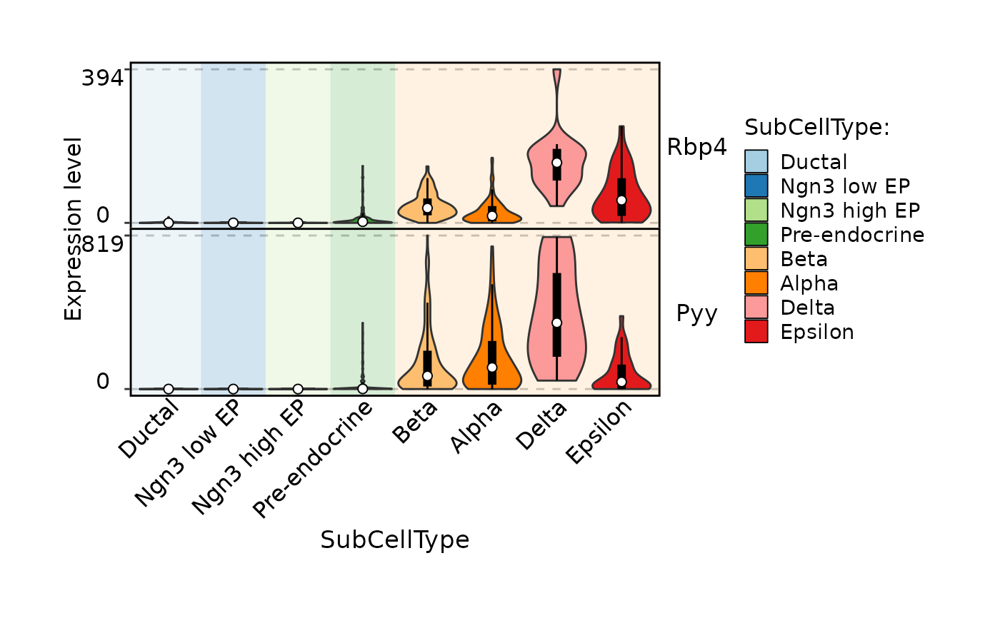
FeatureStatPlot(pancreas_sub,
stat.by = c(
"Sox9", "Anxa2", "Bicc1", # Ductal
"Neurog3", "Hes6", # EPs
"Fev", "Neurod1", # Pre-endocrine
"Rbp4", "Pyy", # Endocrine
"Ins1", "Gcg", "Sst", "Ghrl" # Beta, Alpha, Delta, Epsilon
),
legend.position = "top", legend.direction = "horizontal",
group.by = "SubCellType", bg.by = "CellType", stack = TRUE
)
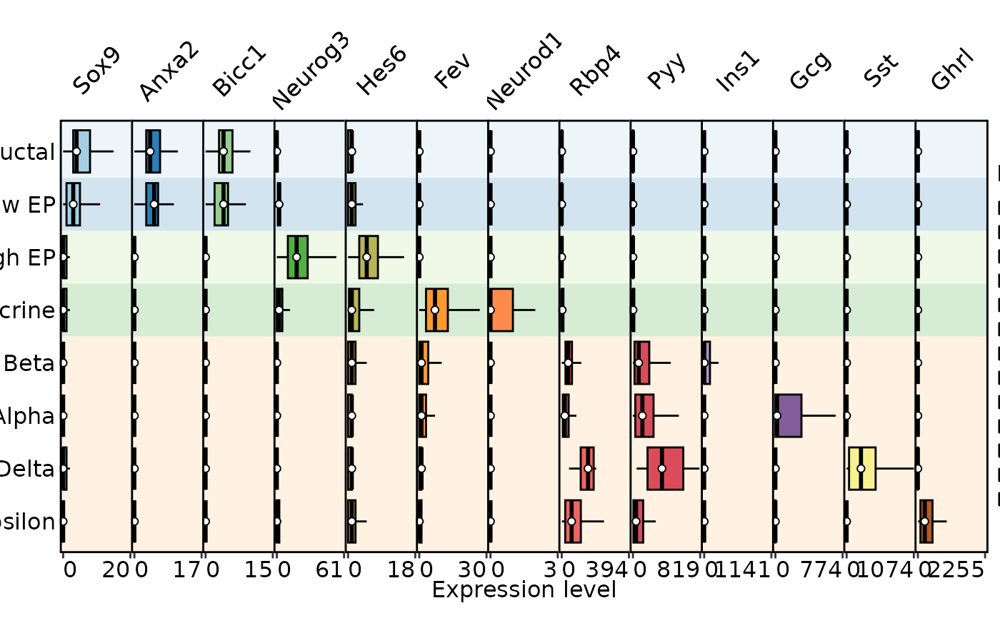
FeatureStatPlot(pancreas_sub,
stat.by = c(
"Sox9", "Anxa2", "Bicc1", # Ductal
"Neurog3", "Hes6", # EPs
"Fev", "Neurod1", # Pre-endocrine
"Rbp4", "Pyy", # Endocrine
"Ins1", "Gcg", "Sst", "Ghrl" # Beta, Alpha, Delta, Epsilon
),
fill.by = "feature", plot_type = "box",
group.by = "SubCellType", bg.by = "CellType", stack = TRUE, flip = TRUE
) %>% panel_fix_single(width = 8, height = 5) # Because the plot is made by combining, we want to adjust the overall height and width
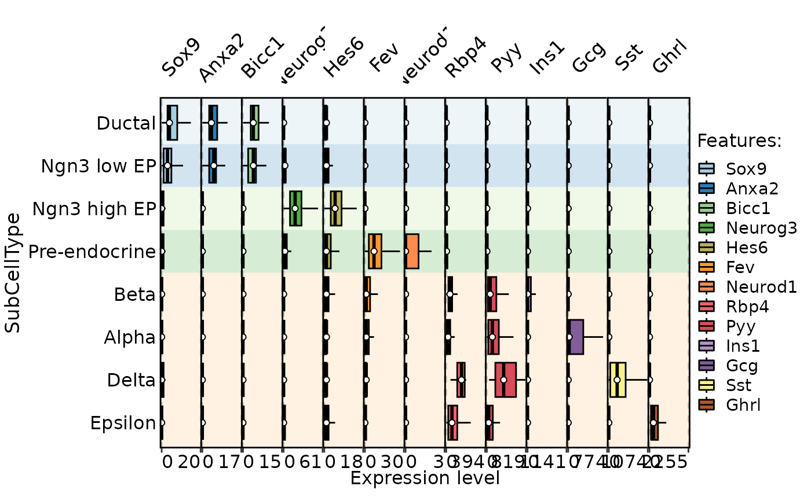